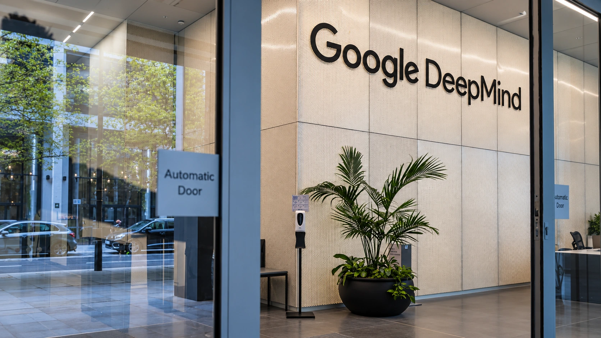

Google Unveils Gemini 4 Carbon With Early Access Limited to Cyber Defenders
Google’s new AI model targets software security and longer coding tasks. Initial access and introductory pricing have important limits.

Google announced Gemini 4 Carbon on Wednesday, emphasizing software-security work and sustained coding tasks while limiting the initial rollout to selected cyber defenders. The model is not yet a general release for every developer, business or consumer. Google says access will expand through trusted partners as it evaluates safeguards and feedback.
The announcement makes access conditions as important as the model's claimed performance. Organizations cannot assume that a new model announcement means an immediate replacement is available in their existing applications. For security teams, an early-access program is a way to evaluate a capability under defined conditions, rather than evidence that production systems can already depend on unrestricted use.
The first rollout has a defensive purpose
Google says a subset of defenders will receive access starting this week, with additional trusted partners admitted through its Fairwind Program. The program's published framework prioritizes organizations such as governments, critical-infrastructure operators and major technology platforms. Its controls include organizational vetting, restricted distribution and requirements around employee access and authentication.
Those program documents still describe the earlier Argon model in parts of the technology and governance sections. They provide context for the access framework, but should not be treated as a separate announcement that every existing partner already has Carbon. Wednesday's Carbon release is the relevant source for the new model's staged availability.
The distinction between permission to test a system and permission to let it change important software matters. A team can initially assess proposed fixes in an isolated environment, compare them with existing checks and retain approval over deployment. That approach lets an organization measure useful work while limiting the consequences of a faulty suggestion or an incorrectly authorized action.
Benchmarks measure tasks, not immunity from attacks
Google reports improvements in vulnerability discovery, exploitation testing and patching, including more than twice Argon's secure-code success rate on an internal benchmark. These are company-reported findings. They do not establish that the model will find every flaw in a customer's software or that every suggested change is safe to deploy without review.
SEC-bench Pro, one of the evaluations cited by Google, describes tests of security-bug discovery and proof-of-concept generation on targets including browsers and the Linux kernel. Its methodology uses specified environments, task prompts, time limits and checking procedures. Results therefore depend on the version, tools and test conditions, rather than measuring a universal probability that any system is secure.
For a buyer, the more informative comparison is the number of valid problems found and correctly repaired, with the time spent reviewing false positives included. NIST's voluntary AI Risk Management Framework organizes risk work around governing, mapping, measuring and managing systems across their lifecycle. It supplies an evaluation approach, not a certification that Carbon or another model is suitable for a particular organization.
The pricing footnote changes the cost comparison
Google lists introductory pricing of $2 per million input tokens and $10 per million output tokens. Its footnote says the rates become $4 and $20 after the introductory period. A token is a unit of processed text or other model input and output; it is not the same as one completed security investigation or one accepted software patch.
At an unchanged workload, those later per-token rates would double the corresponding model bill. Actual project costs also depend on repeated attempts, the length of the material processed, supporting tools and human review. Our analysis of inference economics explains why a price per token needs to be translated into the cost of a completed task.
Wednesday's announcement adds a new model to that evaluation process. It establishes a restricted rollout and published pricing terms, while the performance claims still need to be tested against an organization's own requirements. TTN's guide to enterprise-agent returns examines that final step: turning an impressive capability into reliable work whose benefit exceeds its full operating cost.
Sources and methodology
Sources checked October 28, 2026. Official decisions, company statements and reported findings are attributed in the text. Financial and operational implications are TTN editorial analysis.
- Google: October 28 Carbon announcement, rollout and pricing footnote
- Google DeepMind: Fairwind access, defensive-use controls and partner requirements
- SEC-bench Pro: security-task evaluation methodology and versioned results
- NIST: voluntary AI Risk Management Framework and lifecycle evaluation
- Reuters: October 28 model announcement and restricted rollout